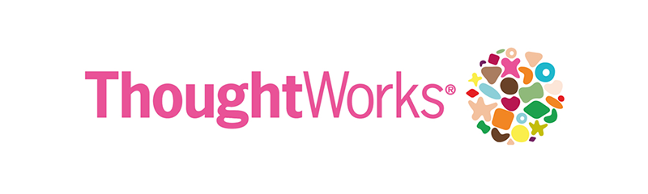

Lucas Tétreault
I am a Software Developer with almost 10 years of professional experience. I have spent the majority of my career building highly performant backend services for a consumer mortgage lending application. I am passionate about quality and value practices such as test driven development, pair programming and automated testing. More recently I have focused on Javascript development, building micro services with Node.js and managing the entire build/deploy lifecycle.Education
Bachelor of ScienceCombined Computer Science and Mathematics
University of Regina, Regina, SK
Contact
Employment Experience

Thoughtworks
Senior Developer
March 2017 - September 2017
I was assigned as a Senior Application Developer for 6 months and worked closely with the client to build, using Node.js/Express/Docker, an e-commerce system. The initial launch was for a specific product and had minimal integration to order management systems. Version two included integrating with legacy systems to fully automate order processing. The resulting application is a generic e-commerce system that will be able to support all of their products. All of the delivered micro services are automatically built, tested and deployed to Openshift in Docker containers.Farm Credit Canada
Senior Developer
June 2011 - March 2017
Farm Credit Canada is a Canadian Government Crown Corporation that provides consumer and mortgage loans, and leases to Canadian farmers and agribusiness. I started on the SAP ABAP development team building SOAP/REST services on and extending functionality of SAP CML and CMS. I quickly became familiar with the legacy tech stack, a monolithic Java application with a Swing based half-object model UI framework (Canoo ULC). I helped move FCC to a micro service and micro site architecture using Spring Boot and modern web technologies: AngularJS and eventually Angular (2/4).Farm Credit Canada
Deskside Support Analyst
May 2008 - June 2011
As a desk side support analyst, I provided Tier 2 support for all workstations at Farm Credit Canada. I worked closely with vendors and external support services to resolve issues. I was responsible for configuration, distribution and management of software.Technology
Javascript
Node.js
SAP ABAP
Express.js
Angular
Java
AngularJS
Jenkins
Openshift
PHP